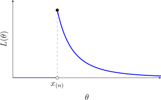

2.1 Introduction
Let \(X_1, \dots , X_n\) be a random sample from the model \(\{f_\theta (x) : \theta \in \Omega \}\), with observed values \(x = (x_1, \dots , x_n)\).
- 1.
- The likelihood function is \(L(\theta ) = L(\theta ; x) = \prod ^n_{i = 1} f_\theta (x_i)\), regarded as a function of \(\theta \) for the fixed data.
- 2.
- The log likelihood is \(\mathcal {L}(\theta ) = \ln L(\theta )\).
- 3.
- The score function is \(S(\theta ) = S(\theta ; x) = \frac {\partial }{\partial \theta }\mathcal {L}(\theta )\).
- 4.
- The information function (observed information) is \(I(\theta ) = I(\theta ; x) = -\frac {\partial }{\partial \theta }S(\theta ) = -\frac {\partial ^2}{\partial \theta ^2}\mathcal {L}(\theta )\).
- 5.
- The Fisher information (expected information) is \(J(\theta ) = E_\theta \left [I(\theta ; X)\right ]\).
- 6.
- A value \(\hat \theta = \hat \theta (x)\) that maximises \(L(\theta )\) over \(\Omega \) is a maximum likelihood estimate (ML estimate) of \(\theta \); the random variable \(\hat \theta (X)\) is the maximum likelihood estimator.
In many problems \(\hat \theta \) is found by solving the score equation \(S(\theta ) = 0\) and checking that \(I(\hat \theta )>0\), so that the stationary point is a maximum. Since \(\ln \) is increasing, maximising \(L\) and maximising \(\mathcal {L}\) are the same, and the logarithm turns the product into a sum.
Example 2.1.2. Show that for a random sample both the score and the information are sums of \(n\) terms of identical form.
Solution. \(\mathcal {L}(\theta ) = \sum _{i=1}^n\ln f_\theta (x_i)\), so \[S(\theta ) = \sum ^n_{i = 1}\frac {\partial }{\partial \theta }\ln f_\theta (x_i) = \sum ^n_{i = 1}\frac {f'_\theta (x_i)}{f_\theta (x_i)},\] where the prime denotes \(\frac {\partial }{\partial \theta }\). Differentiating once more by the quotient rule, \begin {equation} \label {eq:infosum} I(\theta ) = -\sum ^n_{i = 1}\frac {f_\theta (x_i)f''_\theta (x_i) - \left [f'_\theta (x_i)\right ]^2}{\left [f_\theta (x_i)\right ]^2} = \sum ^n_{i = 1}\left [\left (\frac {f'_\theta (x_i)}{f_\theta (x_i)}\right )^2 - \frac {f''_\theta (x_i)}{f_\theta (x_i)}\right ]. \end {equation} Each is a sum of \(n\) terms, the \(i\)th depending on \(x_i\) only. Writing \(S_1\), \(I_1\) and \(J_1\) for the score, information and Fisher information of a single observation, \(S(\theta ) = \sum S_1(\theta ; x_i)\), \(I(\theta ) = \sum I_1(\theta ; x_i)\) and, taking expectations, \(J(\theta ) = nJ_1(\theta )\).
Example 2.1.3. Let \(X_1, \dots , X_n\) be a random sample from \(\text {POI}(\theta )\). Find the ML estimator of \(\theta \) and the Fisher information, and compare \(\frac {1}{J(\theta )}\) with \(\var (\hat \theta )\).
Solution. \[L(\theta ) = \frac {e^{-n\theta }\theta ^{\sum x_i}}{\prod x_i!},\qquad \mathcal {L}(\theta ) = -n\theta + \left (\sum x_i\right )\ln \theta - \ln \prod x_i!,\] \[S(\theta ) = -n + \frac {\sum x_i}{\theta },\qquad I(\theta ) = \frac {\sum x_i}{\theta ^2} .\] The score equation gives \(\hat \theta = \bar x\), and \(I(\hat \theta ) = \frac {n}{\bar x}>0\) when \(\bar x>0\), so this is a maximum. (If every \(x_i = 0\) the likelihood \(e^{-n\theta }\) is decreasing and is maximised at the boundary, \(\hat \theta = 0 = \bar x\) again.) The Fisher information is \[J(\theta ) = E\left [\frac {\sum X_i}{\theta ^2}\right ] = \frac {n\theta }{\theta ^2} = \frac n\theta .\] Using a single observation instead, \(I_1(\theta ) = \frac {x}{\theta ^2}\) and \(J_1(\theta ) = \frac 1\theta \), and \(J = nJ_1\) as example 2.1.2 says. Finally \(\var (\hat \theta ) = \var (\bar X) = \frac \theta n = \frac {1}{J(\theta )}\). This is no accident: section 2.3 shows that \(\frac {1}{J(\theta )}\) is a lower bound for the variance of any unbiased estimator, and here it is attained.
Problem 2.1.1. Suppose that \(X\thicksim BIN(n,\theta )\) and we observe \(X\). Find the M.L estimator of \(\theta \), the score function and the Fisher information.
Show solution
Solution. \[\log L(\theta ) = \log \binom {n}{x} + x\log \theta + (n-x)\log (1-\theta ).\] Differentiating gives the score \[S(\theta ,X) = \frac {X}{\theta } - \frac {n-X}{1-\theta } = \frac {X-n\theta }{\theta (1-\theta )} .\] Setting it to zero gives \(X(1-\theta )=(n-X)\theta \), that is \(X=n\theta \), so \[\widehat {\theta } = \frac {X}{n}.\] For the information, \(\partial ^{2}\log L/\partial \theta ^{2} = -X/\theta ^{2} - (n-X)/(1-\theta )^{2}\), and since \(E(X)=n\theta \), \[I(\theta ) = -E\left [\frac {\partial ^{2}\log L}{\partial \theta ^{2}}\right ] = \frac {n\theta }{\theta ^{2}} + \frac {n(1-\theta )}{(1-\theta )^{2}} = \frac {n}{\theta } + \frac {n}{1-\theta } = \frac {n}{\theta (1-\theta )} .\] Note that \(\var \left (\widehat {\theta }\right )=\theta (1-\theta )/n = 1/I(\theta )\): the estimator attains the information bound exactly, which the form of the score — affine in \(X\) — already predicted.
Problem 2.1.2. Suppose that \(X\thicksim NB(k,\theta )\) and we observe \(X\). Find the M.L estimator of \(\theta \), the Score function and the Fisher information.
Show solution
Solution. With \(P_{\theta }(X=x)=\binom {x+k-1}{x}\theta ^{k}(1-\theta )^{x}\), \[\log L(\theta ) = \text {const} + k\log \theta + X\log (1-\theta ),\] so the score is \[S(\theta ,X) = \frac {k}{\theta } - \frac {X}{1-\theta } .\] Setting it to zero, \(k(1-\theta )=X\theta \), giving \[\widehat {\theta } = \frac {k}{k+X}.\] Since \(\partial ^{2}\log L/\partial \theta ^{2} = -k/\theta ^{2} - X/(1-\theta )^{2}\) and \(E(X)=k(1-\theta )/\theta \), \[I(\theta ) = \frac {k}{\theta ^{2}} + \frac {k(1-\theta )}{\theta (1-\theta )^{2}} = \frac {k}{\theta ^{2}} + \frac {k}{\theta (1-\theta )} = \frac {k}{\theta ^{2}(1-\theta )} .\] Here the score is not affine in \(\widehat {\theta }\), and indeed the maximum likelihood estimator is biased — its expectation exceeds \(\theta \) — so the information bound is not attained at finite \(k\).
The score equation is not always the way to the maximum. When the support depends on \(\theta \), the likelihood can be discontinuous and the maximum can occur at an end point.
Example 2.1.4. Let \(X_1, \dots , X_n\) be a random sample from \(\text {UNIF}(0, \theta )\). Find the ML estimator of \(\theta \).
Solution. As in example 1.3.7, \[L(\theta ) = \frac {1}{\theta ^n}I\left (x_{(n)}<\theta \right )I\left (x_{(1)}>0\right ).\] For \(\theta <x_{(n)}\) some observation exceeds \(\theta \) and the likelihood is \(0\); for \(\theta \ge x_{(n)}\) it is \(\theta ^{-n}\), which decreases in \(\theta \) (figure 2.1). The maximum is at the smallest admissible value, so \(\hat \theta = X_{(n)}\). (Strictly, with the open interval \((0, \theta )\) the supremum is approached as \(\theta \downarrow x_{(n)}\); using the closed interval \([0, \theta ]\), as is usual, the maximum is attained at \(x_{(n)}\).) The score \(-\frac n\theta \) is never zero, so the score equation would not have found it.

Problem 2.1.3. Let \(X_1, \, \cdots \, , \, X_n\) be a random sample from a distribution with pdf \[f_{\theta }(x) = \theta \, x^{\theta - 1}\ , \ 0 < x < 1\ , \ \theta > 0.\] Find the M.L estimator of \(\theta \), the scored function and the Fisher information.
Show solution
Solution. \[\log L(\theta ) = n\log \theta + (\theta -1)\sum _{i=1}^{n}\log X_i ,\] so the score is \[S(\theta ,X) = \frac {n}{\theta } + \sum _{i=1}^{n}\log X_i .\] Setting it to zero and writing \(T=-\sum _{i=1}^{n}\log X_i>0\), \[\widehat {\theta } = \frac {n}{T} = \frac {-n}{\sum _{i=1}^{n}\log X_i}.\] The second derivative is \(-n/\theta ^{2}\), which is already free of the data, so \[I_n(\theta ) = \frac {n}{\theta ^{2}},\] that is \(1/\theta ^{2}\) per observation.
Comparing with the earlier problem on this same density: the UMVUE was \((n-1)/T\) while the maximum likelihood estimator is \(n/T\). The latter is biased upwards by a factor \(n/(n-1)\), and the two agree to first order in \(n\).
Problem 2.1.4. Suppose \(X_1, \, \cdots \, , \, X_n\) is a random sample from the \(UNIF(\theta , \theta + 1)\) distribution. Show that the M.L estimator of \(\theta \) is not unique.
Show solution
Solution. The likelihood is \[L(\theta ) = \prod _{i=1}^{n} I\left (\theta <x_i<\theta +1\right ) = I\left (x_{(n)}-1 < \theta < x_{(1)}\right ),\] which takes only the values \(0\) and \(1\). It equals \(1\) for every \(\theta \) in the interval \(\left (x_{(n)}-1,\ x_{(1)}\right )\) and \(0\) outside it.
Since the likelihood is constant on that interval, every point of it maximises the likelihood equally well. The interval has positive length whenever the sample range is less than one, which happens with probability one, so the maximum likelihood estimator is not unique — there is a continuum of them. Common conventions pick \(x_{(n)}-1\), or \(x_{(1)}\), or the midpoint \(\left (x_{(1)}+x_{(n)}-1\right )/2\), but nothing in the likelihood principle prefers any of them.
Note. This is the standard warning that “the” maximum likelihood estimator is a figure of speech. Uniqueness needs an argument, and here there is none to be had: the data restrict \(\theta \) to an interval and say nothing whatever about where in that interval it lies.
Theorem 2.1.5 (Invariance). If \(\hat \theta \) is the ML estimator of \(\theta \) and \(\tau \) is any function, then \(\tau (\hat \theta )\) is the ML estimator of \(\tau (\theta )\).
Proof. When \(\tau \) is one-to-one, write \(\eta = \tau (\theta )\); the likelihood as a function of \(\eta \) is \(L(\tau ^{-1}(\eta ))\), which is maximised where \(\tau ^{-1}(\eta ) = \hat \theta \), that is, at \(\eta = \tau (\hat \theta )\). For a general \(\tau \) the likelihood of \(\eta \) is defined as the induced likelihood \(L^*(\eta ) = \sup \{L(\theta ) : \tau (\theta ) = \eta \}\). Then for every \(\eta \), \(L^*(\eta )\le \sup _\theta L(\theta ) = L(\hat \theta )\), while at \(\eta = \tau (\hat \theta )\) the set over which the supremum is taken contains \(\hat \theta \), so \(L^*(\tau (\hat \theta )) = L(\hat \theta )\). Hence \(\tau (\hat \theta )\) maximises \(L^*\). □
Example 2.1.6. Let \(X_1, \dots , X_n\) be a random sample from \(\text {POI}(\theta )\). Find the ML estimator of \(\tau (\theta ) = e^{-\theta } = P(X = 0)\), and compare it with the UMVUE.
Solution. By example 2.1.3, \(\hat \theta = \bar X\), so by theorem 2.1.5 the ML estimator of \(e^{-\theta }\) is \(e^{-\bar X}\). The UMVUE found in example 1.6.14 is \(\left (1 - \frac 1n\right )^{n\bar X}\). The two differ: for \(n = 10\) and \(\bar x = 1.5\) they are \(e^{-1.5} = 0.223\) and \(0.9^{15} = 0.206\). The ML estimator is biased, since \(E\left (e^{-\bar X}\right ) = \exp \left (-n\theta (1 - e^{-1/n})\right )\ne e^{-\theta }\), but the difference vanishes as \(n\to \infty \).
Questions on this section
Stuck on something here? Ask below and it stays attached to this topic.